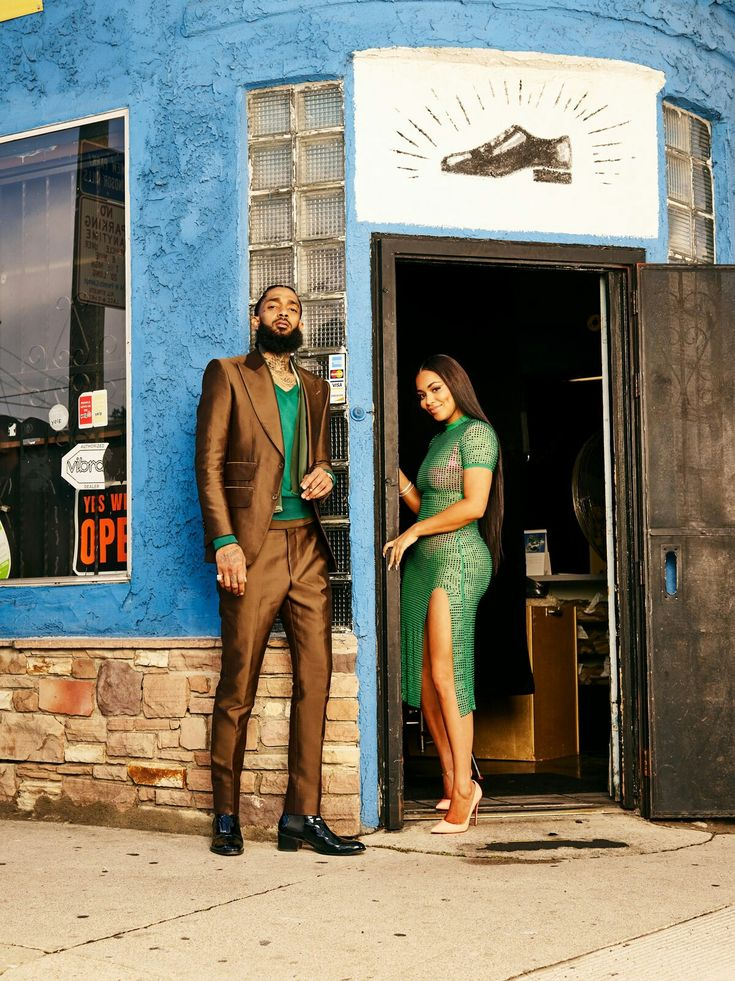

Ermias "Nipsey" Asghedom
"The Marathon Continues: Building Legacy, Empowering Community."

Here are some positive impactful initiatives Ermias made during his life:
-
Community Empowerment
- Vector 90: Nipsey co-founded Vector 90, a co-working space and STEM (Science, Technology, Engineering, and Math) center in South Los Angeles, to provide underprivileged youth with access to education and mentorship in technology and entrepreneurship.
-
Entrepreneurship and Business
- The Marathon Clothing Store: Nipsey opened a smart store on Slauson Avenue, equipped with technology for an enhanced shopping experience. It also served as a symbol of his commitment to rebuilding and uplifting his neighborhood.
- Ownership Advocacy: He promoted the importance of ownership and reinvesting in one's community, often sharing knowledge about real estate, music rights, and business development.
-
Music with a Message
- Through his music, Nipsey encouraged themes of resilience, self-reliance, and perseverance. Songs like Victory Lap and Hussle & Motivate inspired listeners to strive for greatness.
-
Philanthropy
- Investments in South Los Angeles: Nipsey reinvested into his community by employing local residents and supporting small businesses.
- Educational Efforts: He donated resources and time to local schools and educational initiatives to create opportunities for the next generation.
-
Advocacy for Financial Literacy
- Nipsey was an advocate for financial literacy, teaching others about saving, investing, and building generational wealth. He often spoke about the importance of empowering the Black community through financial independence.
-
Real Estate Investments
- He purchased properties in Crenshaw and South LA to prevent gentrification and provide affordable housing for residents.
-
Youth Mentorship
- Nipsey actively mentored young people in his community, sharing his experiences and guiding them to pursue education, entrepreneurship, and creative endeavors.
-
Social Justice
- He collaborated with the LAPD to discuss reducing gang violence and improving relationships between law enforcement and communities of color.
-
Tech and Innovation
- Nipsey encouraged the adoption of technology and innovation within urban areas, bridging the gap between Silicon Valley and communities of color.
-
Advocacy for Peace
- He promoted peace and unity among rival gangs in Los Angeles, using his influence to encourage conflict resolution and community building.
-
Health and Wellness Awareness
- Nipsey supported Dr. Sebi's teachings and advocated for healthy living, plant-based diets, and holistic medicine.
-
Legacy of "The Marathon"
- His mantra, “The Marathon Continues,” symbolizes resilience, progress, and the importance of pursuing long-term goals despite challenges.
“Without a game plan and without a strong sense of faith in what you're doing, it's gonna be real hard to accomplish anything.”
-Ermias "Nipsey" Asghedom